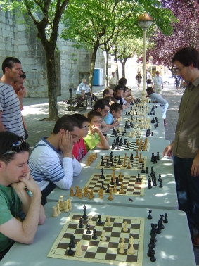
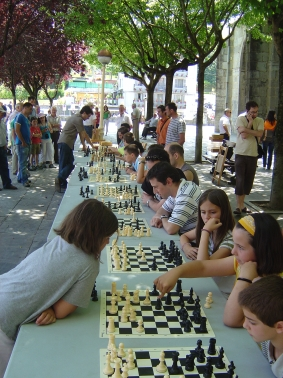
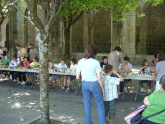

Agustin de Leitza Xake Elkartea |
| » hasiera » elkarteko bazkideak » taldekako txapelketa » azken txapelketak » antolatutako enkintzak » loturak |
San Juan-eko simultaneakBeste urte bat pasa da eta berriro antolatu dugu simultaneak sesio bat Goiko Plazan herriko festak direla eta. Aurten ere Iosu izan da simultaneak emateko arduraduna, eta ezin baino hobeto bete du bere betebeharra, aurkariak iazkoak baino azkoz ere indartsuagoak ziren, baina Iosu garaile irten da.
Iazko arrakastagatik erabaki genuen ekintza handitzea eta 15 mahai jartzea, agian datorren urtean berriro aldatu beharko genuke kopuru hau, baina ez dakit handitzeko edo txikitzeko! Iosuk esaten baitu oso nekatuta bukatu duela. Ordutagie izan da iazkoa, baina badirudi aurten parranda gehiago egin duela jendeak, hasteko orduan bakarrik bostpasei jokalari zeuden prest partidak jolasteko. Hala ere, goizea joan ahala, gero eta jende gehiago inguratu da eta azkenean giro polita egon da Goiko Plazan, eta esan dezakegu ekintza arrakastatsua izan dela, bai jolakarien aldetik, bai ikusleen aldetik. 
Bukatzeko, eskerrak eman hau posible izateko lagundu duten guztiei eta espero dezagun datorren urtean berriko elkar ikustea. 
|